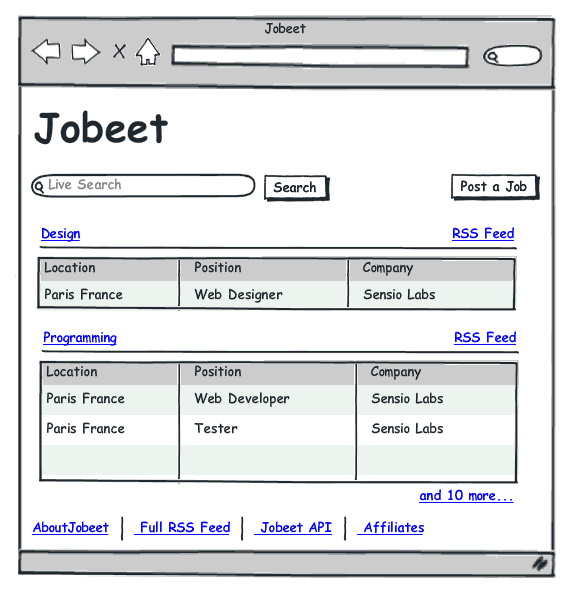
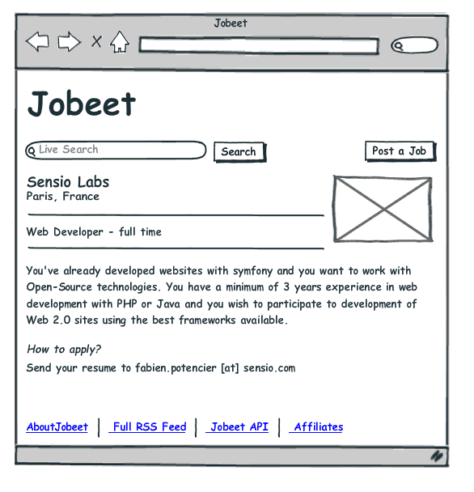

Jobeet Day 2: The Project¶
This day is about the project specifications. They are the same as in the original Jobeet tutorial so you can see a more detailed description and a mockup design there.
Jobeet is Open-Source job board software that only does one thing, but does it well. It is easy to use, customize, extend, and embed into your website. It supports multiple languages out of the box, and of course uses the latest Web 2.0 technologies to enhance user experience. It also provides feeds and an API to interact with it programmatically.
The User Stories¶
We will have four type of users: admin (owns and administers the website), user (visits the website looking for a job), poster (visits the website to post jobs) and affiliate (re-publishes jobs on his website).
In the original tutorial we had to make two applications, the frontend, where the users interact with the website, and the backend, where admins manage the website. Using Symfony 4 we would not do that anymore. We will have only one application and, in it, a separate secured section for admins.
Story F1: On the homepage, the user sees the latest active jobs¶
On the Jobeet homepage a user sees a list of 10 recent active jobs grouped by category. Only the location, the position, and the company are displayed for each job. For each category there are links that allow to list all the jobs. The user can also search for jobs or post a new job.

Story F2: A user can ask for all the jobs in a given category¶
The user sees a list of all the jobs from the category sorted by date and paginated with 20 jobs per page.

Story F3: A user refines the list with some keywords¶
The user can enter some keywords to refine his search. Keywords can be words found in the location, the position, the category or the company fields.
Story F4: A user clicks on a job to see more detailed information¶
The user can select a job from the list to see more detailed information.

Story F5: A user posts a job¶
A user can post a job. A job is made of several pieces of information:
- Company
- Type (full-time, part-time, or freelance)
- Logo (optional)
- URL (optional)
- Position
- Location
- Category (the user chooses in a list of possible categories)
- Job description (URLs and emails are automatically linked)
- How to apply (URLs and emails are automatically linked)
- Public (whether the job can also be published on affiliate websites)
- Email (email of the poster)
The process has only two steps: first, the user fills in the form with all the needed information to describe the job, then he validates the information by previewing the final job page.
There is no need to create an account to post a job. A job can be modified afterwards thanks to a specific URL (protected by a token given to the user when the job is created).
Each job post is online for 30 days (this is configurable by the admin). A user can come back to re-activate or extend the validity of the job for an extra 30 days but only when the job expires in less than 5 days.

Story F6: A user applies to become an affiliate¶
A user needs to apply to become an affiliate and be authorized to use the Jobeet API. He can also choose to get jobs from a sub-set of the available categories. To apply, the user must give the following information:
- Name
- Website UR
The affiliate account must be activated by the admin. Once activated, the affiliate receives a token to use with the API via email.
Story F7: An affiliate retrieves the current active job list¶
An affiliate will retrieve the current job list by calling the API with his affiliate token. The list can be returned in the XML, JSON or YAML format. The affiliate can limit the number of jobs to be returned, and refine his query by specifying a category.
Story B1: An admin configures the website¶
An admin can edit the categories available on the website.
Story B2: An admin manages the jobs¶
An admin can edit and remove any posted job.
Story B3: An admin manages the affiliates¶
The admin can create or edit affiliates. He is responsible for activating an affiliate and can also disable one. When the admin activates a new affiliate, the system creates a unique token to be used by the affiliate.
Next Steps¶
Continue this tutorial here: Jobeet Day 3: The Data Model
Previous post is available here: Jobeet Day 1: Starting up the Project
Main page is available here: Symfony 4.1 Jobeet Tutorial